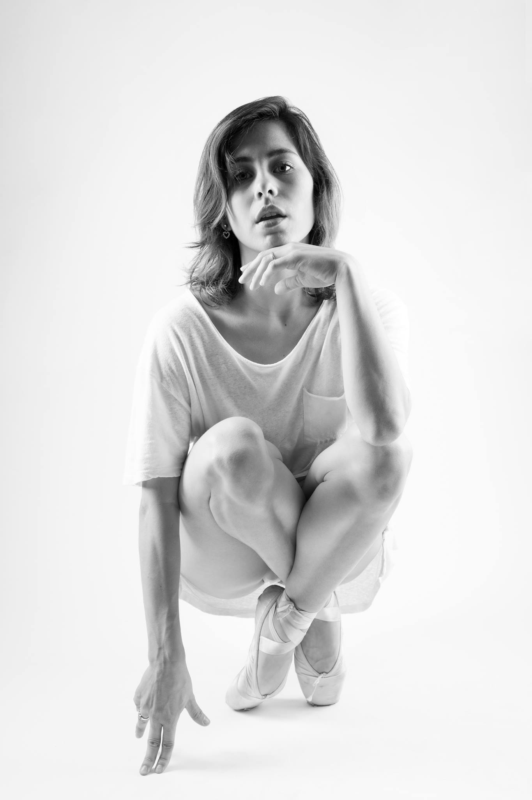

About me
I am Mariana del Rio Chacon, a dancer, circus performer, and dance, movement & drama therapist.
At the age of 4, I started my journey in the world of classical ballet, which led to a lifelong dedication to dance. At 23, I completed my dance studies, achieving Advanced 1 with the Royal Academy of Dance. I worked as a dancer for approximately 7 years, mostly in Mexico, joining different companies and working in the show business. My journey then took a new direction when I discovered circus and, eventually, aerial hoop, which has become my main discipline. I am a self-taught circus performer and have worked in Mexico and Canada with Collective 4237, Le Monastère, Cirque Éloize, and Battement du Cirque, as well as at international festivals such as Periplo and Encuentro Trama.
My path has been touched by the human mind, which drive me to the desire to create and intertwine my therapeutic aspect with my artistic identity.
